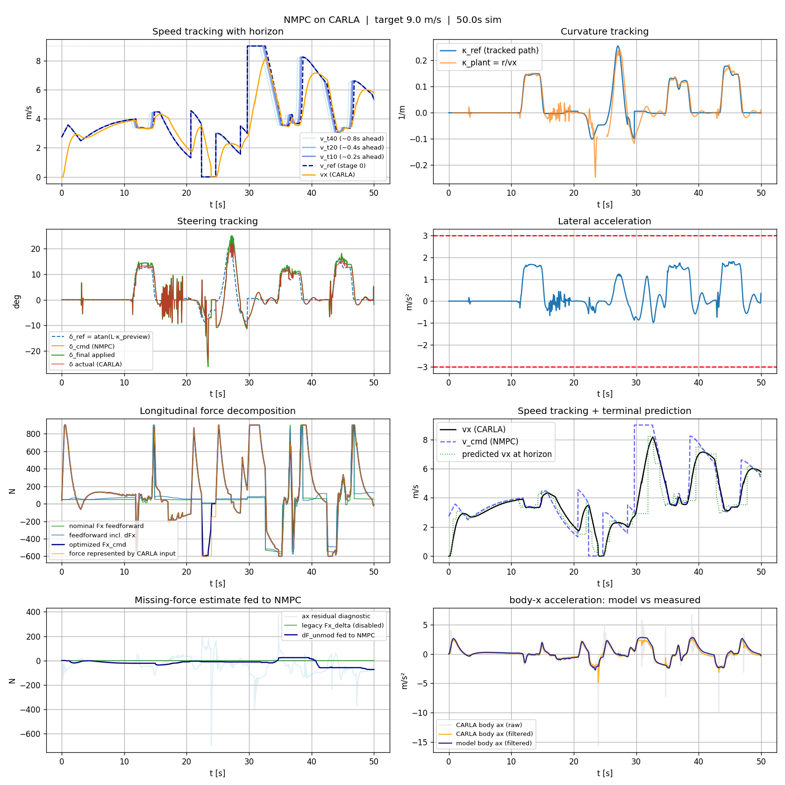

MPC Trajectory Tracking & Roll Avoidance
A real-time nonlinear model-predictive controller that plans and tracks trajectories for a three-wheeled autonomous pod, keeping it stable at the edge of vehicle dynamics. Structured and unstructured local planning, closed-loop in the CARLA simulator.
Plan a path, respect the vehicle
A tadpole pod
A lightweight three-wheeled vehicle — two steered wheels at the front, one at the rear. Its narrow track and single rear contact patch make grip and rollover the central stability concern, so the controller has to plan against those limits directly.
Safety at the edge
Track a planned path accurately while staying inside tire grip, steering and force limits, and — critically — a lateral-acceleration envelope that keeps the pod from tipping. Every constraint is re-evaluated at a 20 ms control rate.
Plan, then optimize
A local planner proposes a drivable path; the NMPC optimizes steering and longitudinal force over a short horizon to follow it, subject to the friction and roll limits; an allocation layer maps the result onto the vehicle.
Where the lateral-acceleration limit comes from
The NMPC never reasons about rollover directly. Each step it consumes a single scalar — the limiting lateral acceleration \(a_y^{\lim}\) — and enforces it as a hard constraint on the predicted motion. That scalar is produced by a standalone geometry-based roll-avoidance algorithm that treats the pod as a rigid body and works from its wheel geometry plus a live estimate of the center of gravity.
Not a symmetric base
On a tadpole the support polygon is a triangle — two front contact patches, one at the rear. In a turn the pod rolls about the line joining the outer front wheel to the single rear wheel: a diagonal axis, not the vehicle centerline.
Static threshold
Suspension compliance and transient load transfer are set aside; the limit is the steady rigid-body point at which the weight vector reaches the tipping axis. It is conservative and cheap enough to recompute inside the control loop.
Inertial sensing
Inertial sensors track dynamic in-plane migration of the CG, so the moment arm reflects the current load state. Because the pod is loaded from the top in a fixed configuration, CG shifts along the vertical (Z) axis are held constant and ignored.
On flat ground, rollover impends when the overturning moment from the lateral inertial force acting at CG height \(h\) equals the restoring moment of the weight acting at the moment arm \(d\). Setting \(m\,a_y\,h = m\,g\,d\) and resolving \(d\) for the tadpole geometry gives:
- g gravitational acceleration
- h CG height above the road plane
- t_f front track width
- L wheelbase (front axle → rear wheel)
- b longitudinal CG-to-rear-wheel distance
- d perpendicular CG-to-tipping-axis distance
- φ road bank angle (favorable positive)
- θ road grade (longitudinal slope)
The \(b/L\) factor is what separates the tadpole from a symmetric vehicle: as the CG migrates toward the single rear wheel (\(b\to 0\)) the margin collapses, while a CG near the wide front track (\(b\to L\)) recovers the full \(g\,t_f/2h\) limit. Road configuration then reshapes the balance — a favorable bank angle \(\phi\) contributes a restoring gravity component, while a grade \(\theta\) reduces the effective normal load:
The same rigid-body construction is evaluated for flat, sloped, and banked surfaces, and the tightest limit for the current road configuration is handed to the NMPC as \(a_y^{\lim}\). The road-configuration treatment follows the rigid-body rollover analysis in “Rollover Stabilities of Three-Wheeled Vehicles Including Road Configuration Effects.”
The rest of the stack
Pose-tracking NMPC
An 11-state predictive controller tracks cross-track error, heading, and speed directly, re-solving a constrained optimization every control step in real time with acados / SQP.
Friction-ellipse tire model
A combined-slip model couples lateral and longitudinal forces, with per-wheel constraints that keep every tire inside its friction ellipse — grip honoured alongside the roll limit.
Two local planners
A Frenet lattice for structured lane-keeping and overtaking, and a Hybrid A* search for unstructured obstacle fields and tight maneuvers — both feeding the same NMPC through one path interface.
Offset-free longitudinal
A disturbance observer estimates unmodeled road load and feeds it back, so speed tracking stays accurate despite plant/simulator mismatch.
Running in CARLA
Closed-loop demos with the live telemetry dashboard — the pod tracking its planned path in CARLA next to real-time plots of speed, steering, curvature, tracking error, and per-wheel friction utilization.
